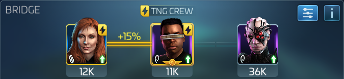

FKR Armadas
super straight forward bring enough mitigation to last the fight. Then one hull breach, one burning burning and crit! if you're sure of a win, bring a loot crew to get more out of your directives
Mitigation

This is the highest damage output of the three mitigation crews discussed here. Dont bother with changeling kira, she's not very effective. Use Six of Eleven for dps instead, or use the extra spot for hullbreach, burning, or Five of Eleven for loot. This crew works very well with Nero or Gorkon, because Mile's extra shots gives them both more rolls to activate, and Sisko's crit ramp will essentially guarantee 100% up time on hull breach after only a few rounds.

This is a good middle ground between damage and loot yield. The last slot can go to either Khan for damage, or to utility.
Kind of a niche pick, it's interesting because Picard's captain maneuver will add a 120% boost to all officer maneuvers. So an officer ability with a value of let's say 10, would have 12 added to it for a total of 22. this means putting either Georgiou or Lorca side card would give them over 100% chance to activate every round.
Loot Crews
This is the most loot yield you can get on the bridge of a ship. It can be more than double, so it might be worth running lower armadas with this crew depending on the level of your Five of Eleven
Similar to above, with a slot for utility. Five of Eleven's officer ability out performs it at Tier 4 and is very close at Tier 3 (60% vs 65%).
This is a great option to get more loot without sacrificing mitigation or damage. Use the last slot to add utility, or Khan for more dps.